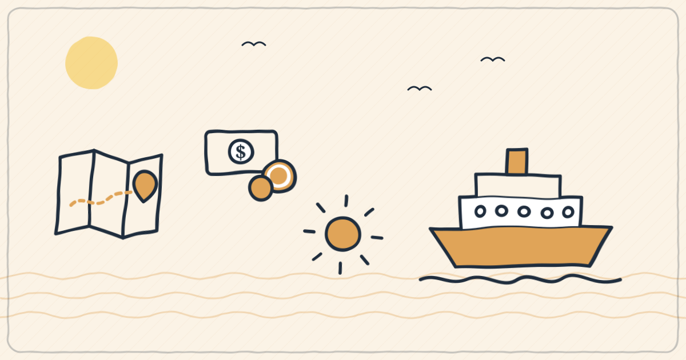

How Much a Panama Canal Cruise Costs From Canada
At recent prices a Canadian couple pays roughly C$5,800–10,500 all-in for a full ocean-to-ocean Panama Canal transit of 14 to 16 nights in an inside cabin, flights included. A partial transit round trip from Florida, about 10 nights, comes in nearer C$4,500–8,000. The fare is only half the story; flights, gratuities and sea-day spending make up the rest.

A full Panama Canal transit costs a Canadian couple about C$5,800 to C$10,500 all-in for an inside cabin at recent prices, once one-way flights, two weeks of gratuities and the usual onboard spending are added to the fare. A partial transit, a round trip from Florida that enters the canal and comes back out the same day, lands closer to C$4,500 to C$8,000. The canal itself is included; the length of the voyage and the shape of the flights set the total.
Full transit or partial transit: what is the difference in cost?
Both put you in a lock chamber watching the water rise. The difference is whether the ship carries on to the other ocean or turns around in Gatun Lake.
| Full transit | Partial transit | |
|---|---|---|
| The ship | Crosses Atlantic to Pacific, or the reverse, in one day | Climbs the Gatun locks into Gatun Lake, then comes back down |
| Ports | Fort Lauderdale to Los Angeles, San Diego or San Francisco; Vancouver in spring and fall | Round trip from Fort Lauderdale or Miami |
| Nights | 14 to 16; 20 or more via Vancouver | 10 or 11 |
| Fare for two, inside, with taxes | About US$2,200–3,800 (C$3,000–5,200) | About US$1,800–3,000 (C$2,500–4,100) |
| Flights | One-way in, one-way home from the other coast | A simple return to Florida |
| Realistic total for two, inside | C$5,800–10,500 | C$4,500–8,000 |
Fares are at recent prices and swing by ship, month and how early you book, so check for your sailing. The totals are closer than the night counts suggest because the partial transit's cheaper flights offset part of the gap.
What does a full transit really cost a couple?
Take a 15-night Fort Lauderdale to Los Angeles sailing for two in an inside cabin:
- Cruise fare with taxes and port fees: US$2,200–3,800, roughly C$3,000–5,200. Balconies add US$600–1,200 per person over this many nights.
- Flights: C$800–1,400 for two on a multi-city ticket, say Toronto to Fort Lauderdale out and Los Angeles to Toronto home.
- Hotel the night before: C$250–450 near Port Everglades. Arriving the day before is not optional on a voyage this long.
- Daily gratuities: US$16–25 per person per day across the big lines, so US$480–750 for two over 15 nights, about C$660–1,030.
- Drinks, Wi-Fi and the small stuff: C$400–900.
- Shore excursions: C$400–1,000 for a few tours in Cartagena, Costa Rica, Panama and Mexico. Several ports are easy to walk.
- Travel insurance: C$300–700 for two, more over 60. Longer trips cost more to insure.
- Transfers: C$100–200 for airport to pier and pier to airport.
The lower end of the range is a couple who book early, walk the ports and drink modestly. The upper end is a balcony, a few organised tours and a drinks package.
Why the one-way flights change the sum
A full transit is open-jaw by nature: you fly into one coast and home from the other. The ticket costs more than a plain return, typically C$400–700 per person at recent prices against C$180–400 for a return to Florida, and both legs are tied to fixed dates, so there is less room to shop for a cheap day.
Book it as one multi-city itinerary rather than two separate one-ways: airlines price it closer to a return fare, and you have one booking to change if the cruise moves.
Direction matters too. Western Canadians generally prefer a sailing that ends in California, because Los Angeles or San Diego to Vancouver or Calgary is a short hop, leaving one long flight to Florida on the way out. Eastern Canadians often choose the same westbound direction for the opposite reason: the short flight comes first and the long one brings them home.
Can you do a Panama Canal cruise from Vancouver?
Yes, twice a year, and for a British Columbia or Alberta couple it is the best deal on the canal. In spring, ships that wintered in the Caribbean sail Fort Lauderdale to Vancouver through the canal to start the Alaska season; in fall they do it in reverse. For 2027, Holland America has Fort Lauderdale to Vancouver sailings of 20 and 21 nights in early April, and Princess has 20-night Vancouver to Fort Lauderdale voyages in the fall.
These are long: around 12 sea days, a Pacific coast run past Mexico and California, and the canal day in the middle. Repositioning sailings are priced to fill, so the per-night fare is usually similar to or lower than the Florida-to-California transits, and a 20-night voyage costs roughly a third more than a 15-night one rather than twice as much. Panama's dry season also makes the canal one of the best places for Canadians to cruise in January. The same pattern is behind the Vancouver to Hawaii crossings the Alaska ships make on their way south.
What does a partial transit cost from Toronto or Montreal?
A 10-night round trip from Fort Lauderdale is the simple version. For two in an inside cabin at recent prices:
- Fare with taxes: US$1,800–3,000, about C$2,500–4,100
- Return flights: C$500–1,000 for two from Toronto, Montreal or Ottawa, more from the west
- Hotel the night before: C$200–400
- Gratuities: US$320–500 for two, roughly C$440–690
- Drinks, tours and insurance: C$800–2,000
That comes to about C$4,500 to C$8,000. Partial transits usually add Aruba or Grand Cayman, Cartagena and a Costa Rican port alongside the canal day, so they feel like a long Caribbean cruise with a highlight in the middle. The flight leg is the one covered in getting from Toronto to Miami for a cruise, with Fort Lauderdale half an hour up the coast.
Where does the extra money go on a long cruise?
The canal is not an expensive destination in itself. The costs that catch people are the ones that scale with nights: gratuities run every day including the canal day, a drinks package that looked pricey on a port-heavy week can beat the bar bill across six or seven sea days, and two weeks of Wi-Fi adds up, so buy the shortest plan that covers the days you need.
Then there is the currency. Everything on board is in US dollars, and paying for a cruise in Canadian or US dollars explains when the line's CAD price helps and when your own card is cheaper; over two weeks the gap can reach a few hundred dollars.
Insurance belongs here too. A long sailing with days far from any hospital is exactly what travel medical cover is for, and the details for provincial plan holders are in cruise travel insurance for Canadians.
Is a full transit worth the extra cost?
If you want to cross from one ocean to the other and have the two to three weeks, yes. The full day in the canal, from the Atlantic breakwater at dawn to the Bridge of the Americas in the late afternoon, is the whole point, and a partial transit gives you half of it.
If time or budget is tighter, the partial transit is not a consolation prize: you still stand in a lock chamber and watch the water rise, on a 10-night cruise with a simple return flight. The approach that works for a realistic Alaska budget works here too: decide the version first, then price it line by line.
Want this checked for your own sailing? A licensed cruise consultant can price it up and answer questions for free, with no obligation.
Ask a cruise expert →Pick the version that fits your map
A Vancouver couple with three weeks should look hard at the April repositioning transits and skip a flight altogether. A Toronto couple with ten days will usually do best with a partial transit out of Fort Lauderdale. Anyone with two weeks and a taste for sea days has the classic Florida-to-California crossing, with the one-way flights built into the sum from day one.
Still wondering?
How long is a Panama Canal cruise?
Full transits between Florida and California run 14 to 16 nights, and the spring and fall sailings that start or end in Vancouver run 20 nights or more. Partial transits, which enter the canal and turn around in Gatun Lake, are usually 10 or 11 nights round trip from Fort Lauderdale or Miami.
Is the canal toll included in the cruise fare?
Yes. The cruise line pays the Panama Canal Authority a toll that can run well into six figures for a large ship, and it is built into every passenger's fare. You will not see a separate charge on your onboard account for the transit itself.
What is the cheapest way to do the Panama Canal from Canada?
A partial transit round trip from Fort Lauderdale in the shoulder weeks of November or late April, flying return from Toronto or Montreal. One airport, one simple return ticket, and a 10-night fare that is often little more than a long Caribbean cruise.